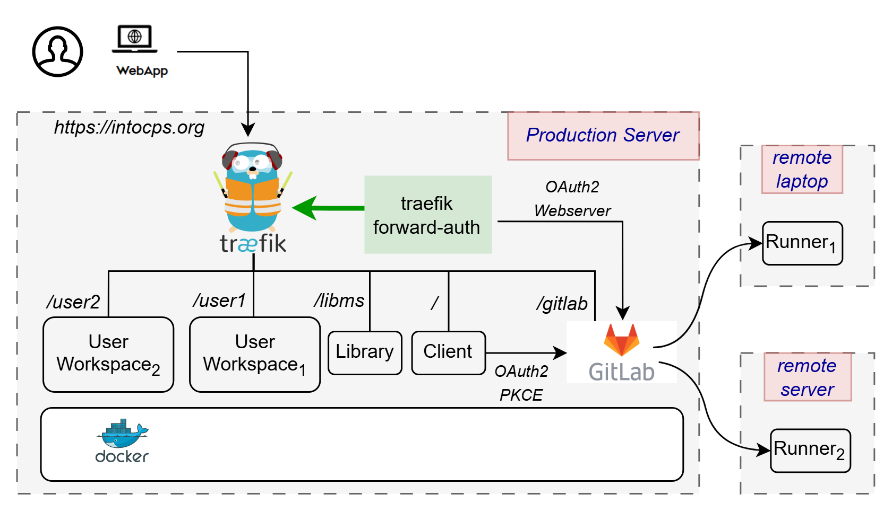

Setting up GitLab Runners with Docker on Windows for DTaaS
This guide documents how to properly set up and configure GitLab runners with Docker on Windows for the DTaaS platform. An illustration of the intended installation setup is shown below.

There are two installation scenarios:
Step-by-Step Setup Process
1. Install GitLab Runner
Download and install GitLab Runner for Windows from GitLab's official download page.
2. Getting a token
To obtain the GitLab token, first navigate to the project page (e.g. https://dtaas-digitaltwin.com/gitlab/dtaas/USERNAME), then do the following:
- settings -> CI/CD -> Runners
- Now press New Project Runner
- Add tag
linux - Leave the rest as is, and press Create Runner
- The token is now displayed. Save it.
The runner token is now available.
3. Register the Runner for DTaaS
For the DTaaS project, register the runner using the specific GitLab instance URL and token:
This configuration is designed for the DTaaS digital twins which require
a Linux environment to run properly. The pipelines use shell scripts with
commands like chmod +x, which need a Linux-compatible environment.
4. Configure the config.toml
The most important part is properly configuring the config.toml file, which
is typically located at C:\Users\YourUsername\.gitlab-runner\config.toml or
in the directory where the gitlab-runner executable was installed and run.
DTaaS Configuration for Windows Hosts
Here is the recommended configuration for running DTaaS Digital Twins on Windows:
6. Restart the Runner
After making these configuration changes, restart the runner:
Verifying the Setup
Run a verification check to ensure the runner is properly configured:
A successful verification will show something like:
Understanding the DTaaS Project Setup
The DTaaS project uses a specific structure for running digital twins:
- Digital twins are contained in the
digital_twinsdirectory - Each digital twin has lifecycle scripts (create, execute, terminate, clean)
- The GitLab CI/CD pipeline triggers these scripts based on user actions
- The scripts need a Linux environment to execute properly
Common Errors
When running GitLab CI/CD pipelines on Windows with Docker, the following errors may be encountered:
These errors are typically caused by:
- Incorrect Docker executor configuration
- Windows-style path specification not being compatible with Docker
- Mismatch between the runner's executor type and the pipeline requirements
Conclusion
By following this guide, it should be possible to properly set up GitLab runners with Docker on Windows for the DTaaS project and avoid the common configuration errors. The most crucial aspects are using the Docker (Linux) executor and properly formatting the volume paths.
Remember that for the DTaaS digital twins, using the standard Docker executor is required, even when running on a Windows host, since the scripts are designed to run in a Linux environment.